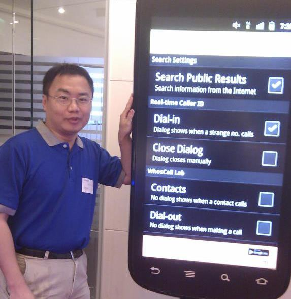

智慧網路實驗室
Smart Networking Laboratory (SNLab)由林致宇 博士主持與指導。本實驗室專注於前瞻通訊網路、邊緣運算與分散式人工智慧技術之研發。研究核心圍繞於網路流量分類與智慧管理、隱私保護聯邦式學習，以及車聯網 (V2X) 與多感測器協同感知等課題，致力培育具備網路協定設計、機器學習應用與分散式系統開發能力的資訊研發人才。
1. 網路流量分類
深度學習特徵萃取、資料不平衡/少樣本處理、半監督式學習與 SDN 流量工程排程。
2. 聯邦式學習
Non-IID 異質設備模型聚合演算法、隱私保護流量分析與 IoT 邊緣智慧平台整合。
3. 車聯網與協同感知
V2X 車載通訊、雷達/攝影機多感測器資料融合、周遭環境自動標記法與情境感知。
研究議題 (Research Topics)
Core Research Pillars & Methodologies網路流量分類 (Network Traffic Classification)
隨著新興應用（如影音串流、雲端運算、加密通訊協定）蓬勃發展，網路流量呈現高度動態化與加密化特徵。精準且即時的流量分類是實現軟體定義網路 (SDN) 流量工程、QoS/QoE 頻寬調配與資安防護的核心關鍵。
- 特徵工程與深度學習模型：研究高效特徵萃取機制，利用 CNN、LSTM、Autoencoder 等神經網路模型分析封包時空特徵。
- 資料不平衡與少樣本學習：解決真實網路環境中常見的類別不均衡 (Class Imbalance) 與少數新興應用樣本不足之分類瓶頸。
- 半監督式與自監督式學習：降低人工標記高昂成本，利用未標記數據提升分類準確度與模型泛化能力。
- 軟體定義網路 (SDN) 流量工程整合：依據流量分類結果即時制定動態路由與頻寬排程策略。
聯邦式學習 (Federated Learning)
在強調個人隱私保護與邊緣運算的發展趨勢下，聯邦式學習 (Federated Learning, FL) 讓多個邊緣節點在「原始資料不出本地」的前提下進行協同模型訓練，有效降低隱私洩漏風險與頻寬傳輸負擔。
- 高效率聚合演算法設計：針對邊緣設備運算能力不均與 Non-IID（非獨立同分布）數據分布，研發兼具快速收斂與抗噪能力的聚合演算法。
- 隱私保護分散式流量分析：結合聯邦學習架構與 Semi-Supervised Learning，實現跨網域、跨設備之分散式流量特徵分類。
- 物聯網與邊緣系統平台整合：結合智慧家庭、IoTtalk 等物聯網架構，實現低延遲、高隱私之分散式智慧感測系統。
- 通訊負擔最佳化與模型輕量化：降低模型參數在伺服端與客戶端之間的通訊頻寬消耗。
車聯網與協同感知 (Internet of Vehicles & Cooperative Perception)
結合車載通訊 (V2X, Vehicle-to-Everything) 與多感測器資料融合技術，突破單一車輛視野遮蔽與感知距離極限，建構高可靠度與即時性的全域環境感知體系。
- 多感測器資料融合 (Multi-Sensor Data Fusion)：融合車載毫米波雷達 (Radar)、光達 (LiDAR)、攝影機 (Camera) 與無線感測訊號，提升障礙物預測與自駕情境感知 (Situational Awareness)。
- 車輛周遭環境自動標記法：設計自動化標註機制，加速感知模型訓練並提升辨識精確度。
- 車道級精準通訊與傳輸調度 (Lane-level Precision Transmission)：在密集車流環境下實現高頻寬、低碰撞的車載通訊封包調度。
- 多感測器協同行人定位與自駕模擬：基於多感測器協同技術進行行人高精度定位，並建立 V2X 模擬驗證平台。
實驗室成員 (Lab Members)
Current Students & Alumni| 序號 | 畢業生姓名 | 畢業論文題目 (Master's Thesis) |
|---|---|---|
| 1 | Liyakat Ali | A GUI Based Federated Learning Framework: Implementation and Applications |
| 2 | 安立郁 | 資料不平衡環境下資料擴增法的效能分析：以流量分類為例 |
| 3 | 吳浣妘 | 基於車對車一次性去中心化聯邦學習之車輛周遭環境感知系統設計 |
| 4 | 廖翊均 | 利用具名目特徵感知之叢集式資料擴增方法改善網路流量分類中的資料不平衡問題 |
| 5 | 江庭葳 | 多車輛協同感知用於行人偵測 |
| 6 | 曾千庭 | 使用聯邦半監督式學習進行網路流量分類 |
| 7 | 梁晉維 | 使用聯邦式學習與自動標記技術實現車輛周遭環境感知 |
| 8 | 黃弘毅 | 軟體定義網路中一個以流量分類為基礎的流量工程方法 |
代表性研究成果 (Research Outcomes)
Selected Publications, Projects & Honors加入智慧網路實驗室 (Join SNLab)
智慧網路實驗室歡迎對人工智慧 (AI/ML)、網路流量分析、聯邦式學習、車聯網 (V2X) 與智慧物聯網系統實作有熱忱的碩士班新生及大學部專題生加入我們的研究團隊！
- 紮實培育：重視理論分析、演算法創新、系統實作與論文寫作能力。
- 定期討論：規律舉行研究進度討論 (1-on-1) 與論文研討會 (Seminar)。
- 產學接軌：積極參與頂尖學術會議發表與產學研究合作計畫。
指導教授 (Advisor)
林致宇 博士 / 副教授
聯絡信箱 (Email)
lincyu (at) mail (dot) ntou (dot) edu (dot) tw
實驗室地址 (Location)
基隆市中正區北寧路2號 國立臺灣海洋大學 資訊工程學系